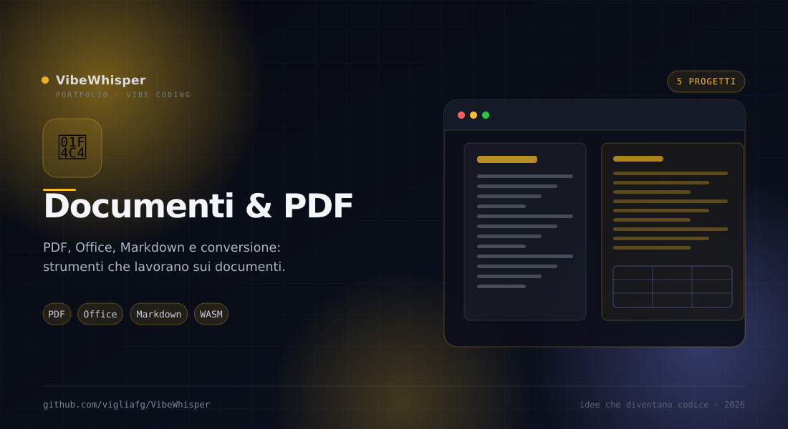

📄
Documenti & PDF
PDF, Office, Markdown e conversione: cinque progetti per manipolare, estrarre, sfogliare e convertire documenti. Tutto quello che serve quando un file non è ancora nel formato che ti serve.
5
Progetti
20
Strumenti PDF
20+
Formati di output
100%
Elaborazione locale
Sezione 01 · Documenti
Dal PDF al formato che ti serve
Qui vivono i tool che aprono, modificano, leggono o convertono un documento. C'è la toolbox PDF completa, la sua variante mobile-first, l'estrattore per paper scientifici, la gallery di copertine e il convertitore universale con Pandoc.
Come sono collegati
Fili comuni
Le cinque schede coprono momenti diversi della stessa filiera: modificare, leggere, sfogliare, convertire.
- pdfhandler ↔ pdfhandler-ng — La stessa toolbox PDF in due interfacce: desktop-first e mobile-first, entrambe client-side.
- Leggere e convertire — pdfextractor estrae Markdown dai PDF complessi; Pandoc WASM Studio converte tra formati con WebAssembly.
- Sfogliare — pdfshow non modifica nulla: rende visibile una cartella di PDF attraverso le copertine.